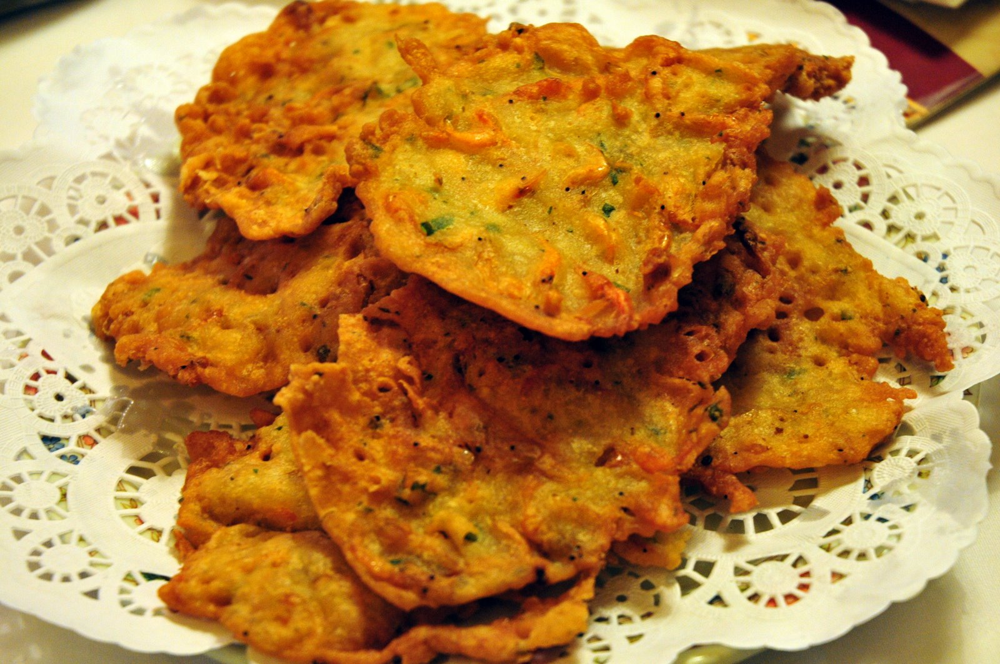

La gastronomia de la província de Cadis correspon al conjunt de la província. És de totes les cuines andaluses, la més rica en varietats d’ingredients i de preparacions.
Sopa de Grazalema: És una sopa de picadillo contundent, conté xoriço, porro pa i herba bona.
Tonyina Encapullada: És un guisat que abunda en les costes andaluses.
Cabanya amb Pirenaica: És un plat que conté verat,tomàquet , pebrot verd i ceba..
Cazón en adob: És una meravellosa tapa ideal per degustar amb una cervesa ben fresqueta.
Truita de gambetes: Es tracta d’una petita truita a força de farina de blat, aigua,sal ,cebolleta, julivert i gambetes.
Urta a la roseña: La urta és un peix que pertany a la mateixa família que l’orada.
Papes amb xoco: És una recepta molt típica d’Andalusia.
Pollastre a la canilla: Està caracteritzat per a la seva preparació, s’utilitza un dels vins amb més personalitat El Marc de Jerez, “el amotillado”.
Veranillo: Es tracta d’un refrito de tomàquets, pebrots, alls i cebes al que s’afegeix una miqueta de llorer.
Cabrillas en tomàquet: Les cabrillas són una espècie de caragols però de mayor grandària.
La cansalada de cel És una de les postres elaborades a força de rovell d’ou caramel·litzada i sucre, compacte i de color groc intens.
